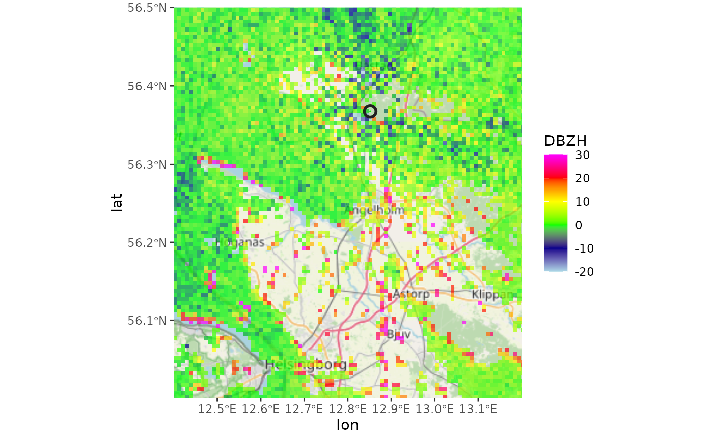
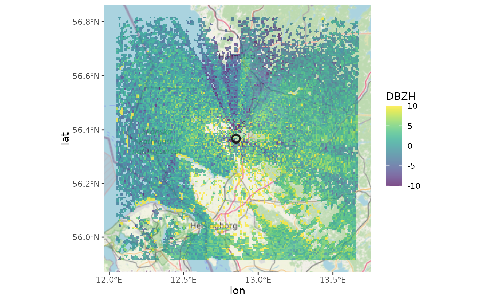
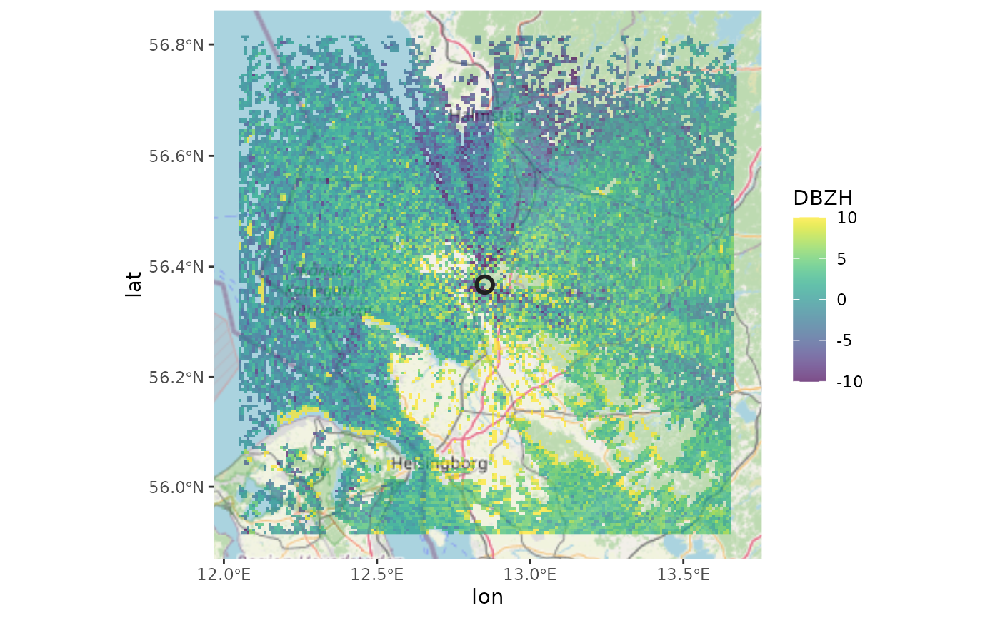

Plots a plan position indicator (ppi) on a base layer using
ggmap::ggmap().
map(x, ...)
# S3 method for ppi
map(
x,
map,
param,
alpha = 0.7,
xlim,
ylim,
zlim = c(-20, 20),
ratio,
radar_size = 3,
radar_color = "red",
n_color = 1000,
palette = NA,
...
)Arguments
- x
A
ppiobject.- ...
Arguments passed to
ggmap::ggmap().- map
Basemap to use, result of a call to
download_basemap().- param
Character. Scan parameter to plot, e.g.
DBZHorVRADH. Seesummary.param()for commonly available parameters.- alpha
Numeric. Transparency of the data, value between 0 and 1.
- xlim
Numeric vector of length 2. Range of x values (degrees longitude) to plot.
- ylim
Numeric vector of length 2. Range of y values (degrees latitude) to plot.
- zlim
Numeric vector of length 2. The range of values to plot.
- ratio
Numeric. Aspect ratio between x and y scale, by default \(1/cos(latitude radar * pi/180)\).
- radar_size
Numeric. Size of the symbol indicating the radar position.
- radar_color
Character. Color of the symbol indicating the radar position.
- n_color
Numeric. Number of colors (>=1) to use in the palette.
- palette
Character vector. Hexadecimal color values defining the plot color scale, e.g. output from
viridisLite::viridis().
Value
A ggmap object (a classed raster object with a bounding box attribute).
Details
Available scan parameters for mapping can by printed to screen by
summary(x). Commonly available parameters are:
DBZH,DBZ: (Logged) reflectivity factor (dBZ)TH,T: (Logged) uncorrected reflectivity factor (dBZ)VRADH,VRAD: Radial velocity (m/s). Radial velocities towards the radar are negative, while radial velocities away from the radar are positiveRHOHV: Correlation coefficient (unitless) Correlation between vertically polarized and horizontally polarized reflectivity factorPHIDP: Differential phase (degrees)ZDR: (Logged) differential reflectivity (dB) The scan parameters are named according to the OPERA data information model (ODIM), see Table 16 in the ODIM specification.
Methods (by class)
map(ppi): Plot appiobject on a map.
See also
Examples
# Project a scan as a ppi
ppi <- project_as_ppi(example_scan)
# \donttest{
# Create a basemap that matches the extent of the ppi
basemap <- download_basemap(ppi, maptype = "toner-lite")
#> Downloading zoom = 9 ...
#> ℹ Map tiles by Stamen Design, under CC BY 3.0. Data by OpenStreetMap, under ODbL.
# Map the radial velocity of the ppi onto the basemap
map(ppi, map = basemap, param = "VRADH")

# Extend the plotting range of velocities, from -50 to 50 m/s
map(ppi, map = basemap, param = "VRADH", zlim = c(-50, 50))
# Map the reflectivity
map(ppi, map = basemap, param = "DBZH")
 # Change the color palette to Viridis colors
map(ppi, map = basemap, param = "DBZH", palette = viridis::viridis(100), zlim=c(-10,10))

# Give the data more transparency
map(ppi, map = basemap, param = "DBZH", alpha = 0.3)
# Change the appearance of the symbol indicating the radar location
map(ppi, map = basemap, radar_size = 5, radar_color = "blue")
# Crop the map
map(ppi, map = basemap, xlim = c(12.4, 13.2), ylim = c(56, 56.5))
#> Warning: Removed 1 rows containing missing values (`geom_rect()`).
# }
# Change the color palette to Viridis colors
map(ppi, map = basemap, param = "DBZH", palette = viridis::viridis(100), zlim=c(-10,10))

# Give the data more transparency
map(ppi, map = basemap, param = "DBZH", alpha = 0.3)
# Change the appearance of the symbol indicating the radar location
map(ppi, map = basemap, radar_size = 5, radar_color = "blue")
# Crop the map
map(ppi, map = basemap, xlim = c(12.4, 13.2), ylim = c(56, 56.5))
#> Warning: Removed 1 rows containing missing values (`geom_rect()`).
# }